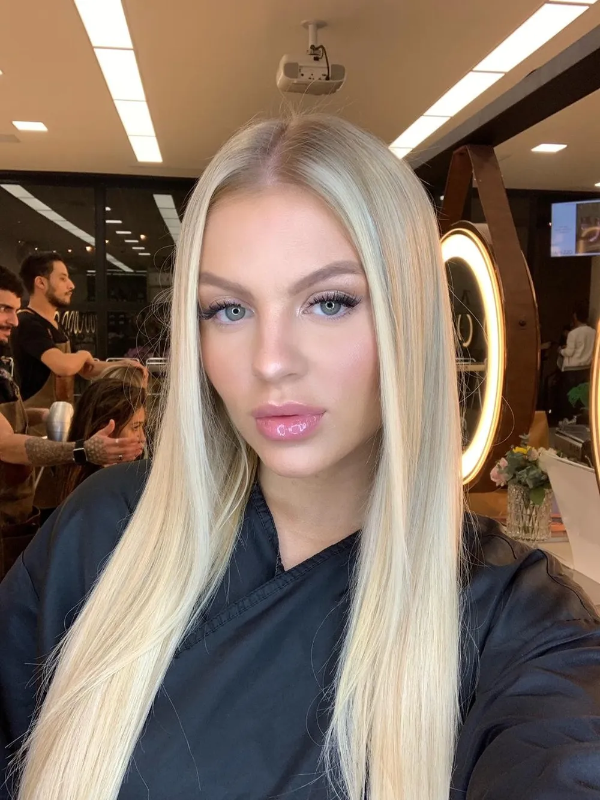

Minha musa favorita: Luisa Sonza
Luísa Sonza é uma cantora, compositora e dançarina brasileira nascida em 18 de julho de 1998. Admiro seu timbre e sua região vocal é muito semelhante com a minha. Isso porque ela é soprano e eu também 💖. Suas letras de músicas são fortes, polémicas e sensuais. Excelente dancarina e artista, além de ter a beleza de uma modelo. De "Mulher do ano" a "Melhor sozinha", cada música dela tem um pouco de mim também!!!

Luísa Sonza (Foto: Instagram/ Reprodução) — Foto: Vogue